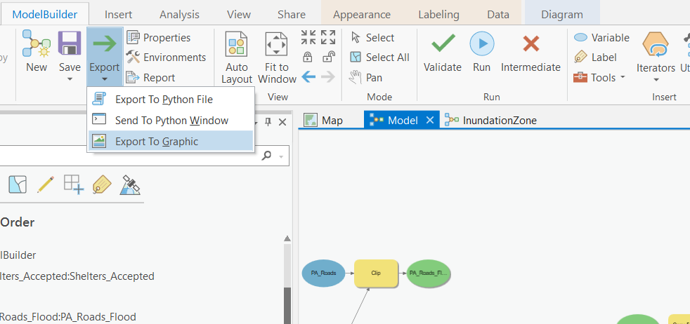

Visualizations & Reports
Table of contents
Export Your Model
In your model window, hit Auto Layout one more time. Then click export and save your model as PA_RiskAssesment_Model.pdf. Note Make sure you save your output as a .pdf, not a .svg file! You will upload this to canvas.

Supporting Figures
Create a bar chart showing the total count of properties at risk by ZoneName. Style it so that it is color-coded by zone type and has the counts labelled on each column.
- Save it as Properties_at_Risk_Chart.png and export it so you can upload it to canvas.
Map the Assessment
Create a map showing :
- The inundation zone
- Roads at risk of flooding
- Use symbology to emphasize the arterial roads
- Properties at risk
- Distinguish between residential and non-residential
- Approved shelter locations.
- Show the shelter locations with graduated symbols.
The video below gives you some tips. Note Make sure to take into consideration the Data Visualization tips presented in Module 3 when creating your maps. Name your map PA_RiskAssessment_Final_Map.pdf and upload it to canvas.
Report on Your Results
Write a brief report (try to keep it under 500 words) for the City of Port Alberni summarizing your findings and the methods you used to answer them. Discuss how the inundation zone was calculated, how you addressed the four questions from the city, and any potential inaccuracies/deficiencies in the risk assessment and suggestions for improving a future risk assessment. Referring to your chart, map, and statistics (population at risk, length of roadways flooded, etc.) where applicable. Consider embedding the figures in your report and/or creating tables for your statistics. You still need to submit figures directly as well so we can view full resolution copies of your chart and map.
Make sure your report explicitly addresses:
1 Which roads are at risk of flooding or damage?
2 Which properties in the city are at risk?
3 How many people in Port Alberni are potentially living in areas at risk?
4 Are the Tsunami Shelters sufficient?
Save your write up as a .pdf named PA_RiskAssessment_Summary.pdf and upload it to canvas.